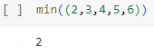
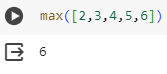

min() and max()
If you wanted to find the maximum or minimum value of a data set in Python, you would use the min() and max() functions. It works by inputting a data set of numerical values, and then depending on the function, it gives an input of a value.


Exit
Next
Back